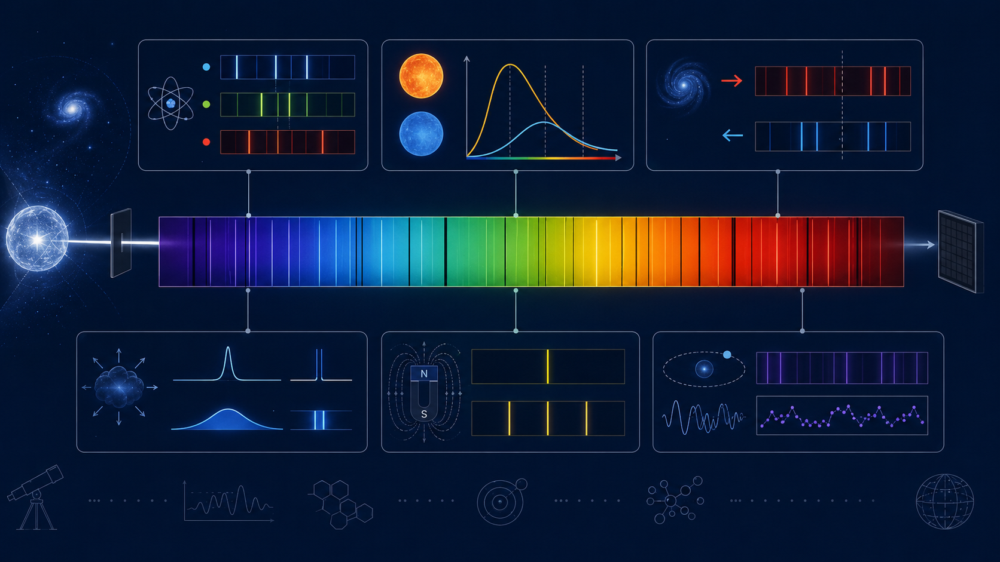

The smooth glow tells us temperature.
A hot dense object produces a broad continuum. Its peak shifts with temperature: cooler objects peak at longer wavelengths, hotter objects at shorter wavelengths. The colour is not decoration; it is physics showing through.
In a simplified sense, a star behaves approximately like a thermal radiator. Real stellar atmospheres are messier than a perfect blackbody, because opacity, pressure, turbulence, and composition all interfere. But the continuum still gives a first clue about the temperature scale.
As temperature T increases, the peak wavelength λmax moves blueward. The star is not changing colour for drama; the radiation field is shifting.
Atoms remove exactly the wavelengths they are allowed to steal.
Electrons occupy quantised energy levels. They absorb photons with specific energies, creating dark absorption lines. Those lines are chemical fingerprints. Hydrogen, sodium, calcium, molecules, ions — each leaves its own pattern.
This is one of the most beautiful parts of physics: the same atomic rules tested in laboratories on Earth can be used to identify material in stars thousands of light-years away. The atom does not care whether it lives in a lab tube or a stellar atmosphere. It obeys the same energy bookkeeping.
The lines move when the source moves.
If the source moves away, lines shift redward. If it moves towards us, they shift blueward. That single fact underlies radial velocity exoplanet detection, galaxy redshifts, binary star orbits, and a suspicious amount of modern astrophysics.
For velocities much smaller than light speed, this approximation connects wavelength shift to line-of-sight velocity.
The hard part is not writing the equation. The hard part is measuring a tiny shift without being fooled by instrument drift, stellar activity, calibration errors, or the universe’s general talent for being annoying.
Composition is written in missing light.
Spectroscopy lets us study objects we cannot touch. Stars, brown dwarfs, nebulae, galaxies, exoplanet atmospheres — all become accessible because light interacts with matter in predictable ways. Conveniently, atoms do not get to lie about quantum mechanics.
In exoplanet atmospheres, spectroscopy can search for molecules such as water vapour, carbon monoxide, methane, and carbon dioxide. In brown dwarfs, spectra reveal temperature classes, clouds, surface gravity, and atmospheric chemistry. In galaxies, spectra reveal redshift, star formation, metallicity, and gas motion.
One rainbow, many crimes.
The supporting image below is kept separate from the simulation because it is better as a quiet explanation: continuum, absorption lines, and motion are three different ways light becomes useful.

Spectra turn distance into data.
Most of astronomy is remote sensing. Spectroscopy is one of the main reasons that remoteness does not make the universe silent. It lets light arrive as a messenger, a witness, and occasionally a snitch.
Comments & reactions
Powered by GitHub Discussions via giscus. Leave a question, correction, or thought below.